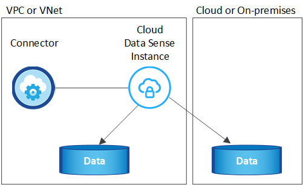

请求文档变更
请求文档变更 在 GitHub 上编辑
在 GitHub 上编辑 提供者指南
提供者指南了解 Cloud Data sense
提供者
Cloud Data sense 是 Cloud Manager 的一项数据管理服务，可对企业内部和云数据源和工作环境进行扫描，以映射和分类数据并识别私有信息。这有助于降低安全性和合规性风险，降低存储成本，并有助于您的数据迁移项目。
功能
Cloud Data sense 提供了多种工具，可帮助您完成合规性工作。您可以使用 Data sense ：
-
识别个人身份信息（ PiII ）
-
根据 GDPR ， CCPA ， PCI 和 HIPAA 隐私法规的要求确定广泛的敏感信息
-
响应数据主体访问请求（ DSAar ）
-
当文件包含特定的 PiE 时，通过电子邮件通知 Cloud Manager 用户（您可以使用定义此条件） "策略"）
-
查看和修改 "Azure 信息保护（ AIP ）标签" 在文件中
-
向文件添加自定义标记（例如 " 需要移动 " ），并分配 Cloud Manager 用户，以便用户可以拥有文件更新
-
复制，移动和删除文件
Cloud Data sense 还提供了一些工具，可以帮助您进行监管工作。您可以使用 Cloud Data sense ：
-
确定系统中的陈旧数据，非业务数据，重复文件，具有打开权限的文件以及非常大的文件。
您可以使用此信息来确定是要将某些文件移动，删除，还是将其分层到成本较低的对象存储。
-
在移动数据之前，查看数据的大小以及任何数据是否包含敏感信息。
如果您计划将数据从内部位置迁移到云，则此功能非常有用。
支持的工作环境和数据源
Cloud Data sense 可以扫描以下类型的工作环境和数据源中的数据：
-
工作环境： *
-
Cloud Volumes ONTAP （部署在 AWS ， Azure 或 GCP 中）
-
内部 ONTAP 集群
-
Azure NetApp Files
-
适用于 ONTAP 的 Amazon FSX
-
Amazon S3
-
数据源： *
-
非 NetApp 文件共享
-
对象存储（使用 S3 协议）
-
数据库
-
OneDrive 帐户
-
SharePoint 帐户
-
Google Drive帐户
Data sense 支持 NFS 3.x ， 4.0 和 4.1 以及 CIFS 1.x ， 2.0 ， 2.1 和 3.0 版。
成本
-
使用 Cloud Data sense 的成本取决于您要扫描的数据量。Data sense 在 Cloud Manager 工作空间中扫描的前 1 TB 数据是免费的。这包括所有工作环境和数据源中的所有数据。要在这之后继续扫描数据，需要订阅 AWS ， Azure 或 GCP Marketplace 或 NetApp 提供的 BYOL 许可证。请参见 "定价" 了解详细信息。
-
要在云中安装 Cloud Data sense ，需要部署云实例，这会导致部署该实例的云提供商收取费用。请参见 为每个云提供商部署的实例类型。如果您在内部系统上安装 Data sense ，则无需任何成本。
-
Cloud Data sense要求您已部署Cloud Manager Connector。在许多情况下，由于您在 Cloud Manager 中使用的其他存储和服务，您已经有了 Connector 。Connector 实例会从部署该实例的云提供商处收取费用。请参见 "为每个云提供商部署的实例类型"。如果在内部部署系统上安装 Connector ，则不需要任何成本。
数据传输成本
数据传输成本取决于您的设置。如果云数据感知实例和数据源位于同一可用性区域和区域，则不会产生数据传输成本。但是，如果数据源（例如 Cloud Volumes ONTAP 系统或 S3 存储分段）位于 Different 可用性区域或区域，则云提供商会向您收取数据传输成本。有关详细信息，请参见以下链接：
云数据感知实例
在云中部署 Data sense 时， Cloud Manager 会将实例部署在与 Connector 相同的子网中。 "了解有关连接器的更多信息。"

|
如果 Connector 安装在内部，则它会将云数据感知实例部署在与请求中的第一个 Cloud Volumes ONTAP 系统相同的 VPC 或 vNet 中。您也可以在内部安装 Data sense 。 |

请注意以下有关默认实例的信息：
-
在 AWS 中， Cloud Data sense 在上运行 "m5.4xlarge 实例" 使用 500 GB GP2 磁盘。操作系统映像为 Amazon Linux 2 （ Red Hat 7.3.1 ）。
在 m5.4xlarge 不可用的区域中， Data sense 会在 m4.4xlarge 实例上运行。
-
在 Azure 中， Cloud Data sense 在上运行 "标准的 D16s_v3 VM" 使用 512 GB 磁盘。操作系统映像为 CentOS 7.8 。
-
在 GCP 中， Cloud Data sense 在上运行 "n2-standard-16 虚拟机" 使用 512 GB 标准持久性磁盘。操作系统映像为 CentOS 7.9 。
在 n2-standard-16 不可用的区域中， Data sense 运行在 n2D-standard-16 或 n1-standard-16 VM 上。
-
此实例名为 CloudCompliance ，并与生成的哈希（ UUID ）串联在一起。例如： CloudCompliance" — 16bb6564-38AD-4080-9a92 — 36f5fd2f71c7
-
每个连接器只部署一个数据感知实例。
-
只要实例可以访问 Internet ，就会自动升级 Data sense 软件。

|
此实例应始终保持运行状态，因为 Cloud Data sense 会持续扫描数据。 |
使用较小的实例类型
您可以在 CPU 较少且 RAM 较少的系统上部署 Data sense ，但使用这些功能较差的系统时会存在一些限制。
| 系统大小 | 规格 | 限制 |
|---|---|---|
超大（默认） |
16 个 CPU ， 64 GB RAM ， 500 GB SSD |
无 |
中等 |
8 个 CPU ， 32 GB RAM ， 200 GB SSD |
扫描速度较慢，最多只能扫描 100 万个文件。 |
小型 |
8 个 CPU ， 16 GB RAM ， 100 GB SSD |
限制与 " 中等 " 相同，并且还可以识别 "数据主题名称" 已禁用内部文件。 |
在云中部署 Data sense 时，如果您要使用其中一个较小的系统，请发送电子邮件至 ng-contact-data-sense@netapp.com 以获得帮助。我们需要与您合作来部署这些较小的云配置。
在内部部署 Data sense 时，只需使用规格较小的 Linux 主机即可。您无需联系 NetApp 以获得帮助。
云数据感知的工作原理
概括地说， Cloud Data sense 的工作原理如下：
-
您可以在 Cloud Manager 中部署 Data sense 实例。
-
您可以在一个或多个工作环境或数据源上启用高级别映射或深度扫描。
-
Data sense 使用 AI 学习过程扫描数据。
-
您可以使用提供的信息板和报告工具帮助您开展合规和监管工作。
扫描的工作原理
启用 Cloud Data sense 并选择要扫描的卷，分段，数据库架构或 OneDrive 或 SharePoint 用户数据后，它将立即开始扫描数据以确定个人和敏感数据。它会映射您的组织数据，对每个文件进行分类，并标识和提取数据中的实体和预定义模式。扫描的结果是个人信息，敏感个人信息，数据类别和文件类型的索引。
Data sense 通过挂载 NFS 和 CIFS 卷与任何其他客户端一样连接到数据。NFS 卷会自动以只读方式访问，而您需要提供 Active Directory 凭据来扫描 CIFS 卷。

在初始扫描之后， Data sense 会持续扫描数据以检测增量更改（因此，保持实例正常运行非常重要）。
您可以在卷级别，存储分段级别，数据库架构级别， OneDrive 用户级别和 SharePoint 站点级别启用和禁用扫描。
映射扫描与分类扫描有何区别
您可以通过 Cloud Data sense 对选定工作环境和数据源运行常规 " 映射 " 扫描。映射仅提供数据的概览，而 " 分类 " 则提供数据的深度扫描。由于无法访问文件以查看数据源中的数据，因此可以非常快速地对数据源进行映射。
许多用户喜欢此功能、因为他们希望快速扫描其数据以确定需要更多研究的数据源、然后只能对所需的数据源或卷启用分类扫描。
下表显示了一些差异：
| 功能 | 分类 | 映射 |
|---|---|---|
扫描速度 |
速度较慢 |
快速 |
文件类型和已用容量的列表 |
是的。 |
是的。 |
文件数和已用容量 |
是的。 |
是的。 |
文件的期限和大小 |
是的。 |
是的。 |
能够运行 "数据映射报告" |
是的。 |
是的。 |
数据调查页面以查看文件详细信息 |
是的。 |
否 |
搜索文件中的名称 |
是的。 |
否 |
创建 "策略" 可提供自定义搜索结果 |
是的。 |
否 |
使用 AIP 标签和状态标记对数据进行分类 |
是的。 |
否 |
复制，删除和移动源文件 |
是的。 |
否 |
能够运行其他报告 |
是的。 |
否 |
云数据感知的索引信息
Data sense 收集数据（文件）并为其创建索引和分配类别。Data sense 索引的数据包括以下内容：
- 标准元数据
-
Cloud Data sense 收集有关文件的标准元数据：文件类型，大小，创建和修改日期等。
- 个人数据
-
个人身份信息，例如电子邮件地址，标识号或信用卡号。 "了解有关个人数据的更多信息"。
- 敏感的个人数据
-
GDPR 和其他隐私法规定义的特殊类型的敏感信息，例如健康数据，种族或政治观点。 "了解有关敏感个人数据的更多信息"。
- 类别
-
Cloud Data sense 会将扫描的数据划分为不同类型的类别。类别是基于 AI 对每个文件的内容和元数据的分析而得出的主题。 "了解有关类别的更多信息"。
- 类型
-
Cloud Data sense 会提取所扫描的数据，并按文件类型对其进行细分。 "了解有关类型的更多信息"。
- 名称实体识别
-
Cloud Data sense 使用 AI 从文档中提取自然人的姓名。 "了解如何响应数据主体访问请求"。
网络概述
Cloud Manager 将云数据感知实例部署到一个安全组中，该安全组可从 Connector 实例启用入站 HTTP 连接。
在 SaaS 模式下使用 Cloud Manager 时，将通过 HTTPS 提供与 Cloud Manager 的连接，并通过端到端加密保护浏览器与 Data sense 实例之间发送的私有数据，这意味着 NetApp 和第三方无法读取这些数据。
出站规则完全开放。要安装和升级 Data sense 软件以及发送使用量指标，需要访问 Internet 。
如果您有严格的网络连接要求， "了解 Cloud Data 感知所接触的端点"。
用户访问合规性信息
为每个用户分配的角色可在 Cloud Manager 和 Cloud Data sense 中提供不同的功能：
-
* 帐户管理员 * 可以管理所有工作环境的合规性设置并查看合规性信息。
-
只有当系统具有访问权限时， * 工作空间管理员 * 才能管理合规性设置并查看合规性信息。如果 Workspace 管理员无法在 Cloud Manager 中访问工作环境，则他们无法在 " 数据感知 " 选项卡中查看工作环境的任何合规性信息。
-
具有 * 合规性查看器 * 角色的用户只能查看其有权访问的系统的合规性信息并生成报告。这些用户无法启用 / 禁用卷，分段或数据库架构的扫描。这些用户也无法复制，移动或删除文件。